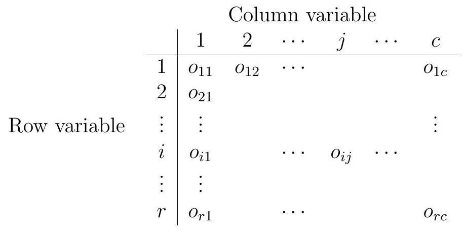
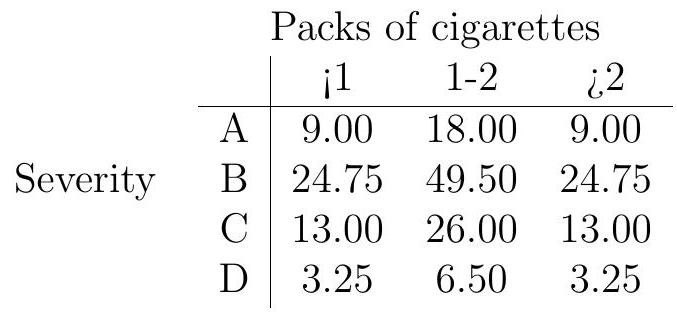

14. Contingency tables#
Probably the most common use of the Chi-squared test is for contingency tables. Data are cross-classified by two (or possibly more, but we stick to two here) categorical variables (e.g., gender, race, eye colour). Each observation falls into one cell in the two-way table, and so we are looking at data that are counts.
Let us suppose there are \(r\) rows and \(c\) columns in our table. Interest resides in testing for some kind of association between the categorising variables. Let the count in the \((i, j)\) th cell be \(o_{i j}\), for \(i=1, \ldots, r, j=1, \ldots, c\), with
say. The data are a table of counts of the following format:

14.1. Test for independence#
We test the hypothesis that there is no dependence between the two qualitative variables categorizing the data. Let
Our null hypothesis then is
for all \(i=1, \ldots, r, j=1, \ldots, c\), and the test statistic is
However, we note that the probabilities in the above are not known. We must estimate them, and use the following
say, in obvious notation. A degree of freedom is removed for each parameter estimated, and since \(\sum_{j} p_{\cdot j}=\sum_{i} p_{i}=1\), there are \(r-1+c-1=r+c-2\) parameters estimated. Hence the correct number of degrees of freedom is \(r c-1-(r+c-2)=(r-1)(c-1)\).
Under \(H_{0}\), the expected values in the table are
14.1.1. Example#
Is lecture attendance related to the grade awarded? Four hundred students were monitored for attendance during a course, and the following table classifies them with respect to class attendance and grade obtained:
Attendance |
D |
C |
B |
A |
Total |
|
|---|---|---|---|---|---|---|
<60% |
11 |
10 |
11 |
20 |
52 |
|
60-85% |
17 |
28 |
30 |
41 |
116 |
|
>85% |
18 |
29 |
70 |
115 |
232 |
|
Total |
46 |
67 |
111 |
176 |
400 |
Under the null hypothesis \(H_{0}\) : There is no association between attendance and grade, we would expect
for \(i=1,2,3\) and \(j=1,2,3,4\). We estimate the row probabilities by \(52/400\), \(116 / 400\) and \(232/400\), the column probabilities by \(46/400\), \(67/400\), \(111/400\) and \(176/400\), and calculate
Now since \((r-1)(c-1)=6\) here, the above value would be consistent with \(\chi_{6}^{2}\) under \(H_{0}\). Now \(\chi_{6}^{2}(0.95)=12.6\), and via \(R\) we find that the \(p\)-value of the test statistic is approximately 0.003. We would reject the claim that there is no association between attendance and performance at the \(5 \%\) level (indeed, at the \(1 \%\) level).
14.2. Tests for homogeneity#
Very similar to the above are tests of the following ilk: are the columns (say) homogeneous populations with respect to the rows? In this case we are testing
for \(i=1, \ldots r\). In cases where this kind of test is used, the column totals are usually fixed in advance.
The following data relate the severity of emphysema (A being mild, D severe) to the number of packets of cigarettes smoked per day by a sample of 200 smokers:
<1 |
1-2 |
>2 |
|
|---|---|---|---|
A |
21 |
12 |
3 |
B |
14 |
61 |
24 |
C |
12 |
23 |
17 |
D |
3 |
4 |
6 |
50 |
100 |
50 |
Note that here the number of smokers in each category was selected in advance by the researcher, and therefore the column totals were fixed. To test for homogeneity, that incidences of the levels of severity of the condition are the same for each class of smoker, we are postulating
for \(i=1,2,3,4\). In fact it can be shown that the test is just the same in terms of the calculation of the test statistic as for the test for independence.
The column totals multiplied by \(o_{i} \cdot / n\) give the expected frequencies in the \(i\) th row cells under \(H_{0}\). The expected values are

We find that \(\chi^{2}=34.325\). As \(\chi_{6}^{2}(0.95)=12.6\), there is very strong evidence against \(H_{0}\) here since the p-value is tiny.
The R command chisq.test can be used to perform goodness-of-fit tests for contingency tables.